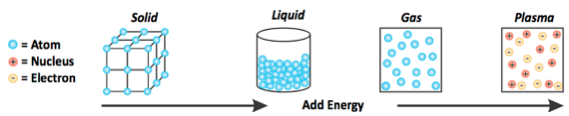
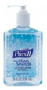
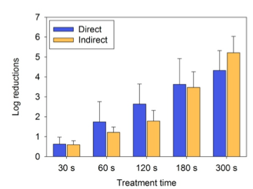
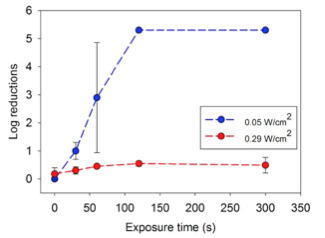
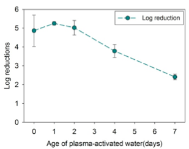

What can we do with Plasma?
Our previous research has focused primarily on developing plasma photochemical devices and techniques within a lab setting. We have previously measured the chemistry and antimicrobial effects both on solid surfaces and in liquid volumes using a similar device specially fabricated in a machine shop and running off an expensive, bulky power supply that requires AC line input.
We aim to produce a new version of the device that can be made cheaply and is entirely "self-contained". To accomplish this, we will need to re-design the device and its power supply. Then, we will need to measure its chemical and antimicrobial effects to make sure the technology is similarly effective in the "field" as in the lab. In addition, our research so far has focused on small scale disinfection.
Plasma is commonly known as the fourth state of matter. This state occurs when gas molecules are given enough energy to break apart into smaller particles that may be positively or negatively charged. These particles often recombine to form new molecules that were not present
before. Our plasma devices have two modes, "high power" (>0.25 W/cm2) and "low power" (<0.15W/cm2), that produce different chemicals. High
power mode favors production of nitrogen oxides, while low power mode favors production of ozone.

The first step will be to design and fabricate a prototype device and power supply. The power supply will operate on a source of power that is both portable and relatively renewable, ideally solar power. To provide expertise in solar power, we will collaborate with WE CARE Solar to leverage their existing "Solar Suitcase" technology for use with our system. Next, we will develop prototype designs for the combined plasma/UV device and fabricate them. Our goal is to develop each prototype device for less than $100 with the understanding that production costs are likely to drop if our device enters mass production. We anticipate completing the power supply and device re-design by the end of August 2013.
Once the first goal is accomplished, we will conduct water disinfection experiments using non-pathogenic E. coli as a model organism. Both the aqueous-phase chemistry and the antimicrobial effect will be measured, and we will compare these results to our lab-scale system. Because we have already developed these assays, we expect this to be the more straightforward part of the commitment, and we anticipate completing these experiments by the end of December 2013.
We measure disinfection by calculating the log reduction in bacteria. This is calculated using the following expression:
|
log10 |
N0
N
|
If hand sanitizer kills 99.9% of bacteria, that is a 3 log reduction! 
Experiments have been performed showing that stainless steel experiences at least a 5-log reduction of E. coli bacteria after 5 minutes of plasma treatment in high power mode. A 5-log reduction in bacteria is 100 times more effective than a 3-log reduction (e.g. hand sanitizer). Direct treatment involved having the plasma touch the steel. Indirect treatment simply allowed the chemicals produced by the plasma to interact with the steel. Reference

Experiments have shown that treatment in both high and low power mode inactivate bacteria present in water. Low power mode achieves at least a 5-log reduction in bacteria after two minutes of plasma treatment. Reference
High power mode is only effective under longer treatment times. One benefit of plasma activated water (PAW) generated in high power mode, is that it remains antimicrobial for days after treatment. After being plasma treated for 20 minutes, the PAW was allowed to "age" for varying amounts of time before bacteria was introduced. Even after 4 days, the PAW was able to achieve more than a 3-log reduction in bacteria. Reference
 